迁移 NSX-V 到 NSX-T: Lift & Shift - 2 部署 Edge Bridge 并迁移
继续介绍如何使用 Lift & Shift + Edge 桥接的方式来迁移现存的 NSX-V 环境到 NSX-T. 这部分将准备新的 NSX-T Edge 集群将 NSX-V 和 NSX-T 的逻辑网段进行桥接, 然后迁移工作负载.
创建并配置桥接所用的 NSX-T Edge 集群
准备主机端口组
在原始 NSX-V 环境创建 VDS Trunk 端口组:
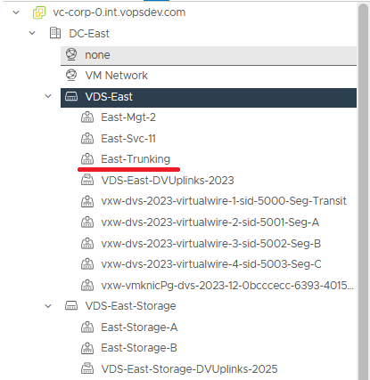
并且在需要桥接的 NSX-V virtualwire 端口组安全设置打开 Promiscuous mode + Forged transmit:
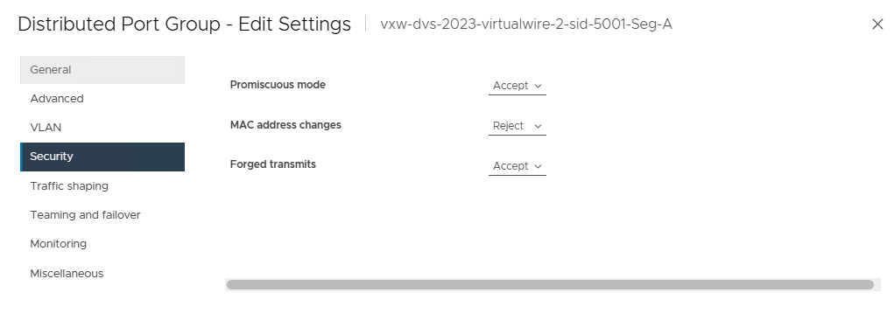
实际上也可以开启 MAC learning 而不使用 Promiscuous. 只是在 vSphere 7 环境下开启 MAC learning 只能通过 API 完成, 而 vSphere 8 则提供了图形界面的方式来启用 MAC learning.
开启 Promiscuous 会对网络性能产生一定影响, 如果无法接受则需使用 MAC learning
部署并配置 Bridge Edge 集群
在原始启用了 NSX-V 的主机集群上部署 NSX-T Edge 节点, 第一个 vNIC 连接管理网络, 第二个 vNIC 连接 Trunk VDS 端口组, 第三个 vNIC 连接目标 NSX-V 逻辑网段:
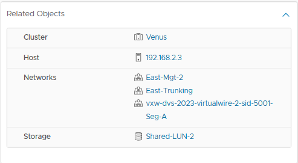
每一个需要桥接的逻辑网段需要一个 Bridge Edge Cluster. 这里总共有三个逻辑网段, 因此需要三个 Bridge Edge Cluster. 每个 Cluster 里至少有一个 Edge Node (如果做高可用则需要两个)
然后配置 Bridge Edge 节点. 每个 Bridge Edge 里将运行两个 NVDS, 一个用于 NSX-T 的 overlay 一个用于桥接, 因此对应的需要两种不同的上行链路配置.
首先是 overlay 的上行链路配置:
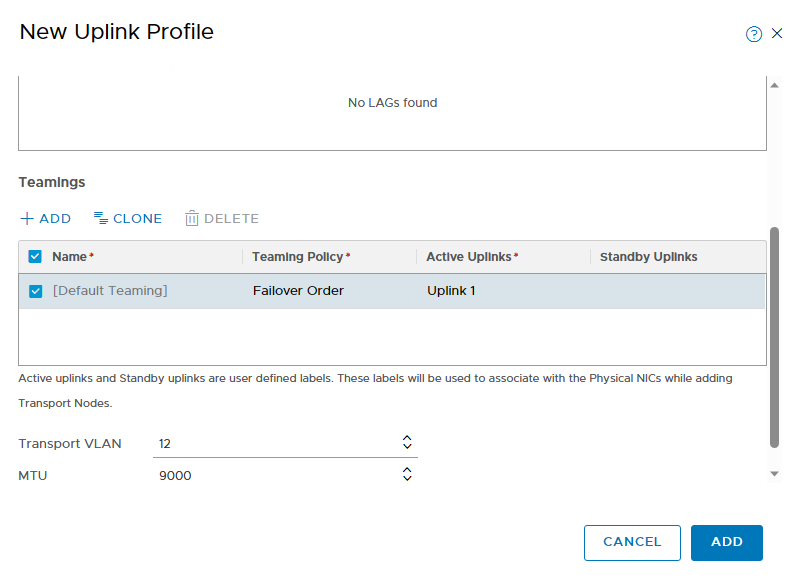
然后是桥接的上行链路配置, transport vlan id 设置为 0:
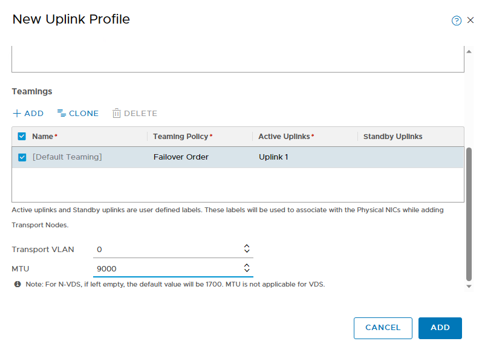
配置 Bridge Edge 节点, 每个 Edge 节点内创建两个 NVDS: 一个用于 NSX-T 的 overlay 流量, 对应使用的是 overlay 的上行配置
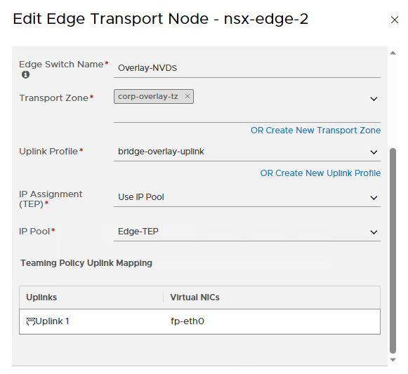
另一个用于桥接流量, 对应使用桥接的上行
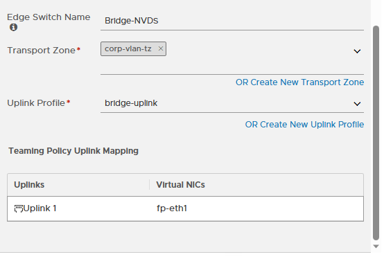
然后为每个需要桥接的逻辑网段创建 Bridge Edge Cluster. 这里创建了三个单节点集群.
创建桥接连接 NSX-V 和 NSX-T 逻辑网段
创建 bridge profile, 关联对应的 Edge cluster, 并选择 primary node
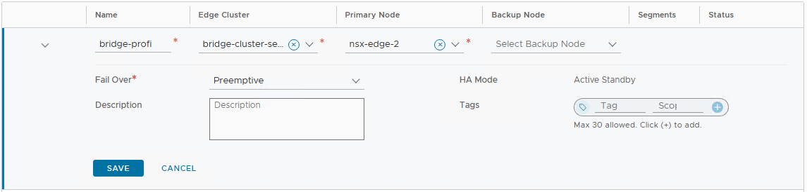
每个需要桥接的逻辑网段都需要一个 bridge profile 关联到对应的 Edge cluster. 最后一共是三个配置:
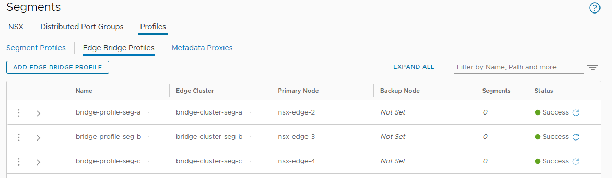
然后到 NSX-T 的各个 segment 下配置桥接: Additional Settings -> Edge Bridges, ADD EDGE BRIDGE
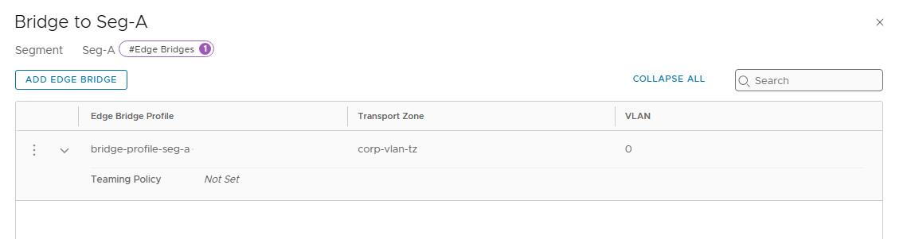
选择对应的 bridge profile, 选择 vlan transport zone, vlan id 使用 0.
桥接配置到此就完成了, 可以用 ssh 登入到各个 Bridge Edge 节点检查服务是否正常:
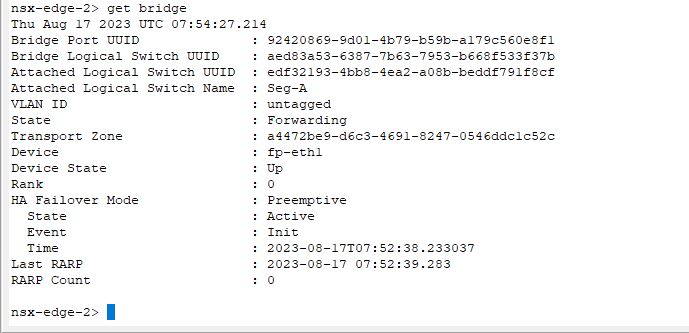
然后可以迁移几个测试虚拟机来验证桥接的连通性. 到此为止, 所有的准备和验证工作都可以在迁移之前完成, 而不会影响到现有的工作负载.
迁移工作负载并切换网络
到了真正迁移的时间, 使用 enhanced vMotion 将所有工作负载迁移到新的 vDC 下, 迁移时目的地选择 NSX-T 的逻辑网段. 取决于工作负载的规模, 这个过程可能会很长. 但是如果前面桥接配置正确, 则这段时间内业务流量不会受到影响.
然后就需要做网关的切换和最后的调整, 这部分配置修改会导致流量短暂中断
- 断开 NSX-V 侧所有 ESG/LDR 的连接
- 将 NSX-T 所有 overlay segment 连接到网关: Seg-A/B 连接到 corp-t0-gw, Seg-C 连接到 corp-t1-ext. 将 internal-lb 连接到 corp-t1-standalone
- 修正 NSX-T VLAN segment 的 vlan id: 0 -> 11
- 刷新物理路由器上 Tier-0 的 ARP 缓存
- 修改 Tier-0 上 bgp 邻居更新源, 使用 VPN tunnel 地址
这些步骤即使手工操作也可以在五分钟内完成. 如果提前准备了 API 调用脚本则可以进一步缩短流量中断时间. 迁移完成并验证后就可以清理 NSX-V 环境了.
关于特定工作负载的考量
相对于就地迁移方案, Lift & Shift + 桥接的方案虽然更加复杂, 但是需要的停机时间会显著缩短. 对维护停机时间有高度要求的企业可能会更倾向于这种方案. 然而企业在选择迁移方案时还需要考虑迁移方案对上层工作负载带来的影响.
Lift & Shift + 桥接的方法会将工作负载迁移到一个新的 vDC 上, 对应的就是一套新的主机/存储/网络环境. 大部分情况下这种变化对上层工作负载是透明的, 然而却并不总是这样. 现在很多容器平台和底层云/虚拟化平台有深度的整合. 如果在容器平台之外修改了底层云/虚拟化环境, 那么容器平台的 cloud provider 配置可能会处于不一致/不可用的状态. 此外对于容器平台某些类型的持久卷, 直接迁移其底层的存储也可能会引起持久卷丢失. 凡此种种都是迁移规划和方案选择时需要考虑的.